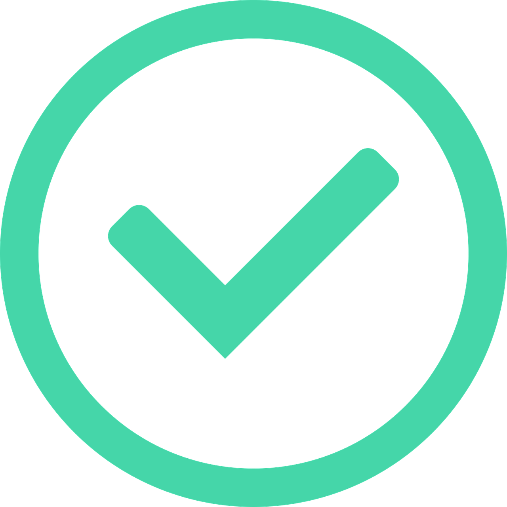

@if (requestPageState$ | async; as requestPageState) {
  <div class="success-page__layout">
    <div class="success-page__layout-content">
      <div class="success-page__layout-content--image">
        
      </div>
      <div class="success-page__layout-content--heading">{{ requestPageState.heading }}</div>
      <div class="success-page__layout-content--subheading">{{ requestPageState.subHeading }}</div>
    </div>
    <div class="success-page__layout-action">
      <!-- button components here -->
      @if (requestPageState.previousUrl) {
        <blogsphere-button
          [type]="ButtonType.primary"
          [size]="ButtonSize.medium"
          (next)="previousClick(requestPageState.previousUrl)"
          >
          Back
        </blogsphere-button>
      }
      <blogsphere-button
        [type]="ButtonType.secondary"
        [size]="ButtonSize.medium"
        (next)="nextClick(requestPageState.nextUrl)"
        >
        {{ requestPageState.nextButtonLabel }}
      </blogsphere-button>
    </div>
  </div>
}
